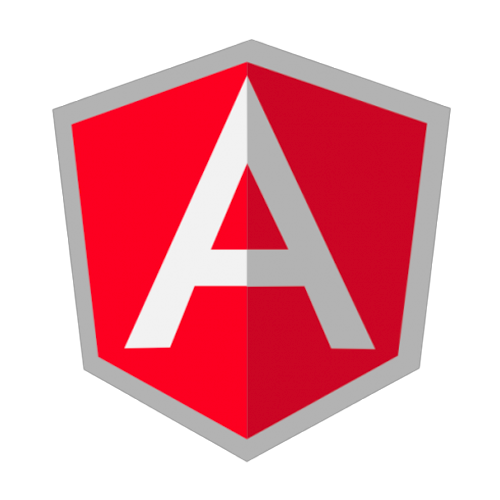
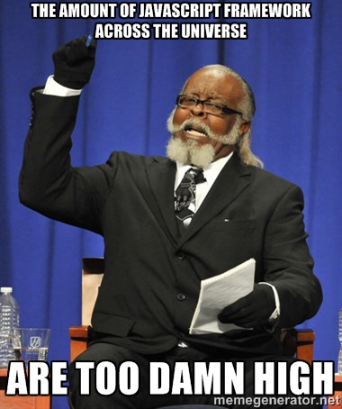
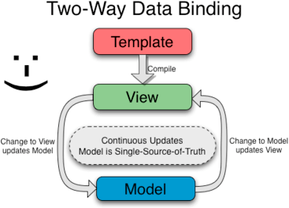

The Super heroic JS MVW Framework

<!doctype html>
<html ng-app >
<head>
<script src="https://ajax.googleapis.com/ajax/libs/angularjs/1.2.11/angular.min.js"></script>
</head>
<body></body>
</html>
Automatic initialization
<tag ng-app="App"></tag>
(function() {
angular.module('App', []);
})();
Manual initialization
(function() {
angular.module('App', []);
angular.bootstrap(document, ['App']);
})();
The framework is born to be modular.
Each ng-app is a module which depends on another module, whether its a service, factory, directive or the app config itself.
angular
.module('BeerModule', [])
.service('BeerService', function() {
this.getBeer = function() {
return "Beer !";
}
});
angular
.module('App', ['BeerModule'])
.controller('someController', ['$scope', 'BeerService',
function($scope, BeerService) {
$scope.giveBeer = function() {
alert( BeerService.getBeer() );
}
}]);
<div ng-app="App" data-ng-controller="someController">
<button ng-click="giveBeer()">Bring me a beer !</button>
</div>
Automatic synchronization between models and views.
<div>
<input type="text" data-ng-model="name" placeholder="Your name please ?">
<h5>Hello {{ name }}!</h5>
</div>
Hello {{ name }} !

Manipulate how your expressions are displayed.
<div ng-init="heroes = [
{ name: 'Axe', type: 'str'},
{ name: 'Sven', type: 'str'}
{ name: 'Drow Ranger', type: 'agi'},
{ name: 'Lich', type: 'int'}
]">
</div>
<div
<input type="text" ng-model="searchText.type">
<ul>
<li ng-repeat="hero in heroes | filter:searchText">{{ hero.name }}</li>
</ul>
</div>
Main logic handler for your application, watch model changes or register services, forget about DOM manipulation.
App.controller('ctrlName', function ($scope, [, dependencies]) {
// your logic here
});
<div ng-controller="ctrlName">
// do your stuff here
</div>
App.controller('ctrlName', function ($scope) {
$scope.count = 1;
$scope.message = '';
$scope.moreBeer = function() {
$scope.count += 1;
if ( $scope.count >= 5 && $scope.count < 10)
$scope.message ="Too much beer !";
if ( $scope.count >= 10 )
$scope.message = "STAAAAHHHP !!!!";
}
});
<div ng-controller="ctrlName">
Beer count : {{ count }}
<p class="small">{{ message }}</p>
<button ng-click="moreBeer()">I want more !</button>
</div>
Beer count : {{ count }}
{{ message }}
allow us to retrieving values or calling another service and return as an object.
"When you’re using a Factory you create an object, add properties to it, then return that same object. When you pass this service into your controller, those properties on the object will now be available in that controller through your factory."
App.factory('BeerFactory', function() {
return "I'm from BeerFactory";
});
...or expose something a bit more
App.factory('BeerFactory', function() {
return {
name : "beer name",
price : "1000"
}
});
quite similar to Factory, except it’s instantiated with the ‘new’ keyword and returned as the service itself a.k.a `this`.
App.service('ServiceName', function() {
this.method = function() {
return "something";
}
});
another example with multiple function inside service
App.service('ServiceName', function() {
this.method = function() {
return "something";
}
this.anotherMethod = function() {
return "something from another method";
}
});
A service is a singleton to an object.
App.service('BeerService', function() {
this.sayBeer = function() {
return "Beer!";
}
this.sayHello = function() {
return "Hello";
}
this.sayBoth = function() {
return this.sayHello() + ' ' + this.sayBeer(); // returns "Hello Beer!";
}
});
App.controller('serviceController', function($scope, BeerService) {
$scope.sayBeer = function() {
alert( BeerService.sayBeer() );
}
$scope.sayHello = function() {
alert( BeerService.sayHello() );
}
$scope.sayBoth = function() {
alert( BeerService.sayBoth() );
}
});
The Angular injector subsystem is in charge of creating components, resolving their dependencies, and providing them to other components as requested.
App.controller('demoCtrl', function($scope, BeerService) {
// $scope, BeerService now accessible here.
});
Dude, minification breaks my application, WTF !?
we need angular dependency annotation, so that the injector knows what services to inject into the function.
App.controller('demoCtrl', ['$scope', 'BeerService',
function(a, b) {
// a is $scope
// and b is BeerService since we already annotated them.
}]);
Here we pass an array whose elements consist of a list of strings (the names of the dependencies) followed by the function itself.
Agular directives are markers on a DOM element which attach a special behavior to it.
At a high level, directives are markers on a DOM element (such as an attribute, element name, comment or CSS class) that tell AngularJS's HTML compiler to attach a specified behavior to that DOM element or even transform the DOM element and its children.
Angular comes with a set of these directives built-in, like:
All of the Angular-provided directives match attribute name, tag name, comments, or class name. The following demonstrates the various ways a directive (beerDir in this case) can be referenced from within a template:
<beer-dir></beer-dir>
<span data-beer-dir="exp"></span>
<!-- directive: beer-dir exp -->
<span class="beer-dir: exp;"></span>
See how Angular normalize the directive name? The normalization process is as follows:
App.directive('beerDir', function() {
return {
template: 'This beer is not so bad ;)'
};
});
<beer-dir></beer-dir>
App.controller('beerController', ['$scope', function($scope) {
$scope.myBeerCollection = [
{ name: 'Carlsberg', grade: 'good'},
{ name: 'Bintang', grade: 'great'},
{ name: 'Guinness', grade: 'not my taste'}];
}])
.directive('myBeer', function() {
return {
controller: 'beerController',
restrict: 'E', // 'A' = attribute, 'E' = element, 'C' = class
templateUrl: 'includes/my-beer.html'
};
});
includes/my-beer.html
<ul class="list">
<li ng-repeat="beer in myBeerCollection">
{{ beer.name }} is {{ beer.grade }}
</li>
</ul>
<my-beer></my-beer>
Angular let you slice your view template into a smaller and managable piece.
With AngularJS we can turn the index.html template into what we call a "layout template". This is a template that is common for all views in Angular application. Other "partial templates" are then included into this layout template depending on the current "route" — the view that is currently displayed to the user.
app.js
App.config(['$routeProvider', function($routeProvider){
$routeProvider
.when('/', {
templateUrl: 'views/home.html'
})
.when('/todo', {
templateUrl: 'views/main.html',
controller: 'MainCtrl'
})
.when('/about', {
templateUrl: 'views/about.html'
})
.otherwise({
redirectTo: '/'
});
}])
.controller('MainCtrl', function ($scope, localStorageService) {
var todosInStore = localStorageService.get('todos');
$scope.todos = todosInStore || [];
$scope.$watch('todos', function () {
localStorageService.add('todos', $scope.todos);
}, true);
$scope.addTodo = function () {
if($.inArray($scope.todo, $scope.todos) == -1){
$scope.todos.push($scope.todo);
}
$scope.todo = '';
};
$scope.removeTodo = function (index) {
$scope.todos.splice(index, 1);
};
});
views/home.html
<div class="jumbotron"><h1>Hello World!</h1></div>
views/about.html
<div class="jumbotron"><h1>This is about beer.</h1></div>
views/main.html
My todos
index.html
See the example.